1 Week 1
Before class: Bill was pointing out to me that Seth Flexman gave an interesting talk on small area estimation yesterday.
Main Themes: 1. Evolution’s Cultural and Scientific Impact: - Charles Darwin’s evolutionary theory remains pivotal even after a century. - Evolution influences various aspects of biology and culture. - Alt-text for image: “Artistic representation of evolution, symbolizing its complex and transformative nature.”
- The Core Concepts of Evolution:
- Evolution involves random genetic changes leading to better adaptation and survival.
- Key aspects include allele frequency changes and environmental adaptations.
- Alt-text for image: “Facsimile of Darwin’s notebook showing early thoughts on species evolution.”
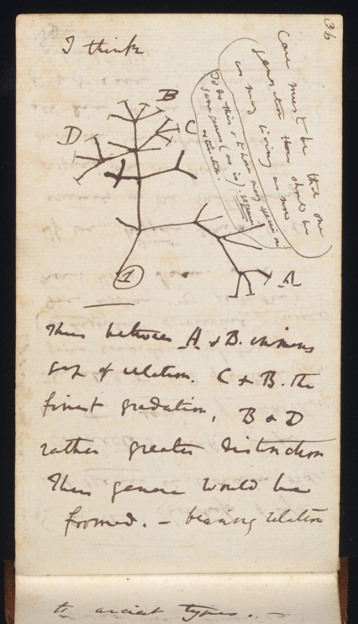
Evolution has an outsized cultural impact.
Darwin’s theory of evolution is one of the only theories over 100 years old
“Nothing in biology makes sense, except in the light of evolution”
—Theodosius Dobzhansky (1900-1975)
- Significant Figures and Responses in Evolution:
- Theodosius Dobzhansky’s quote underscores evolution’s foundational role in biology.
- A range of experts, including Nick Loman and Siouxsie W, engage in discussions around evolution.
- Bill’s modern definition of evolution emphasizes allele frequency changes over time.
- Mechanisms and Requirements of Natural Selection:
- Natural selection operates through phenotypic variation, heritability, and reproductive success.
- The concept of allele fixation in small populations.
Components of evolution:
- random rearrangement of genetic code yields better fitness through selection mechanisms to the environment
- this sounds a bit more like adaptation, which happens as a result of evolution, but not necessarily
- change over time
- allele frequency
- what produces change
People who did not respond to Bill’s Tweet: - Nick Loman, Siouxsie W, Gabriel Perron, Jonathan Eisen, Trevor Bedford
Wikipedia definition, at the time: The change in inherited characteristics of biological populations over successive generations. Evolutionary processes give rise to diversity at every level of organization.
Bill’s definition: Change in “allele” frequency over time.
This is a neo- Darwinian definition since Darwin had no idea what a gene was.
Suggestion: if you read On the Origin of Species, read an earlier copy since Darwin revised it so many times since he didn’t know how to make it work.
Reasons allele change can happen:
- Random chance
- Bottlenecks (losing diversity due to disasters)
- As a result, random things are more likely to be important
- Reproductive fitness
In evolution, we say that an allele moves towards fixation or being fixed if it’s moving towards 100% or 0% presence. This is especially common in small populations.
Requirements for natural selection:
- Phenotypic variation
- Heritability
- Differences in reproductive success
This induces a cycle of selection:
Education is the slow erosion of ignorance —Bill
Recombination is quite interesting — genes responsible for antimicrobial resistance, for example, have been found jumping across species that are about as distant as humans from daphodils, even crossing phyla.
For example, see: https://www.ncbi.nlm.nih.gov/pmc/articles/PMC3068243/
Now for something fun, we’re going to play Plague Inc.
https://www.ndemiccreations.com/en/22-plague-inc
 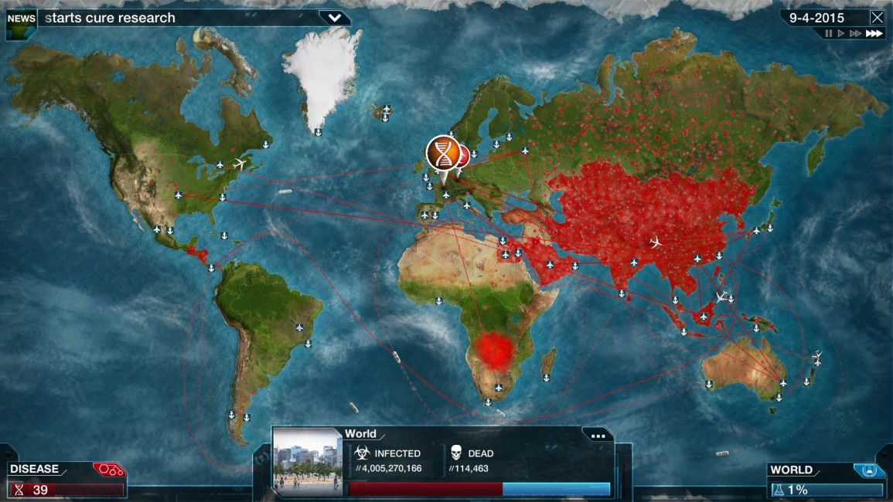
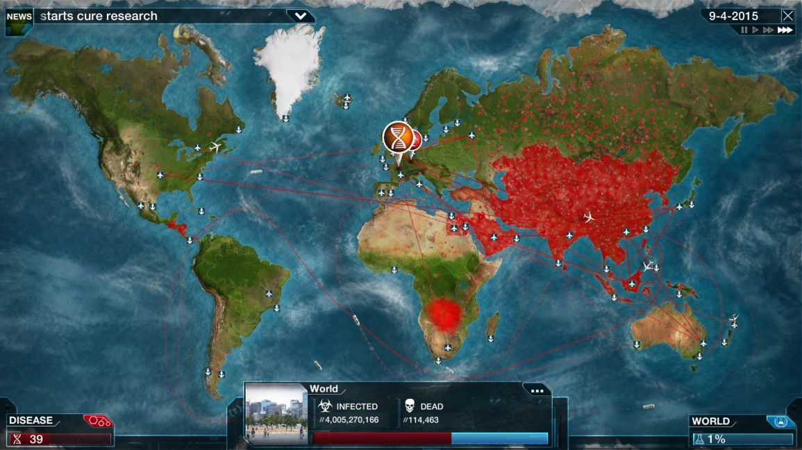
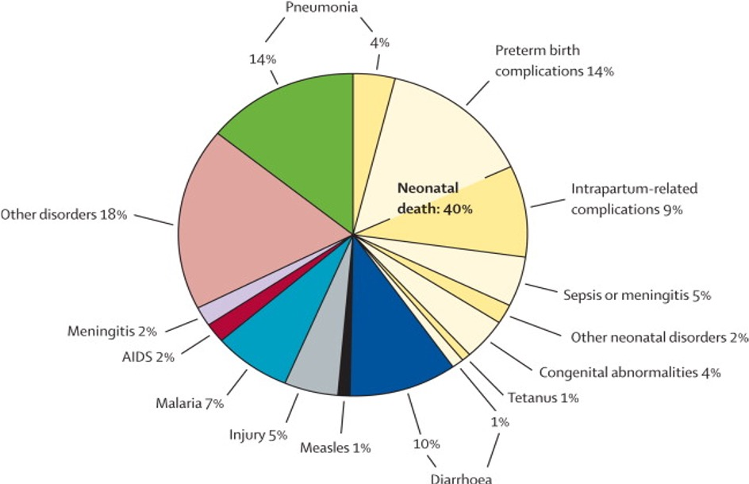
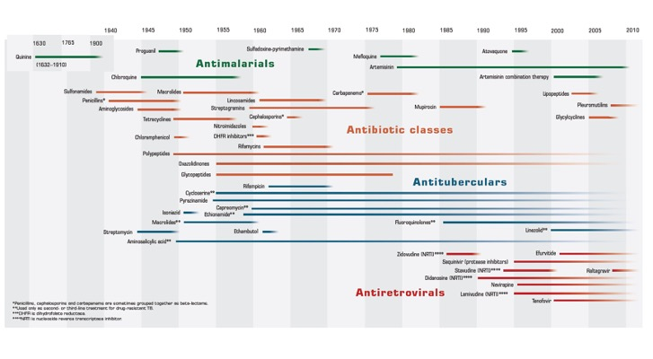
1.1 Some upcoming themes
- How to classify viral agents
- How one replies to press (kind of like a war-game)
- How do we make decisions in situations with uncertainty
Guest lectures from Duncan MacCannell; another guest lecture from Michael Baym
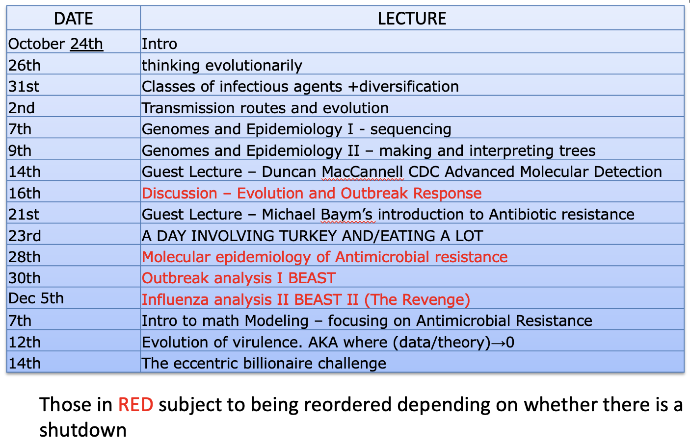
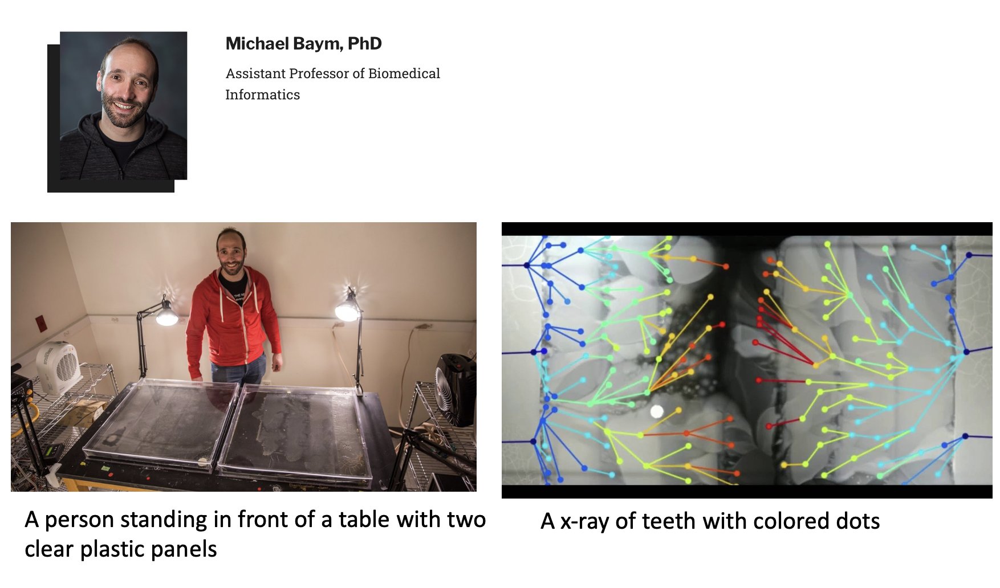
What’s going on in the colored dots figure: a sheet of agar jelly with an increasing gradient of antibiotics, so that we can see how antibiotic resistance evolves.
1.2 Critical Review
- Evidence that the paper has been read: a Summary
- Evidence that you have been awake in class: How does it relate to the field?
- Evidence of critical thinking: What is good or bad about the paper? Just because something is published doesn’t mean it’s right.
- Evidence of scientific thinking and progression: What would you do next?
It’s a sure route to a B- to say “I would like to collect more data.”
The first reflection is due just before Thanksgiving (with background in sequencing), and the second is due around the start of December when we should have background in resistance.
2 Final Question
Is evolution only predictable in retrospect?
Discuss examples from infectious disease and describe what we would need to know in advance in order to predict it in advance.
What kind of things would one need to look for to know in advance?
3 Group Activities
Detecting sources and rapid response, or “making decisions under uncertainty.”
The Eccentric Billionaire Challenge — for pedagogical purposes only; Bill doesn’t approve of Eccentric Billionaires holding purse strings for a lot of reasons.
1 wealthy donor with $$$$ millions of dollars to fund the evolutionary ID project (R01 type, 5 year project) with the potential to do the most good.
Short presentations with a 1-page proposal.
“I want to learn you how to be (usefully) wrong” —Bill
4 Day 2
Positive selection: selection for a new adaptive peak. More ‘fit’ things replace the ancestral population, ‘sweeping’ to fixation.
Examples include resistant bacteria within a person receiving antibiotics, or antigenic drift in Influenza A.
Diversifying selection: Selection for being different. Rare types frequently have an advantage.
Examples include antigens, phage receptors.
Balancing selection: Selection that maintains genotypes at intermediate frequency.
E.g., from the microbiome. If a bacteria A depends on bacteria B for nutrients and vice versa, then we would expect to find them together.
Possibly different serotypes for various pathogens.
Examples: sickle cell genes.
Purifying selection: Highly conserved genes with very little variation in protein sequence.
Mutants are likely to be less fit, so they are purged by selection. E.g., most protein coding genes are subject to purifying selection.
What kinds of selection does the SARS-CoV-2 spike experience? Most of these, with a possible exception of balancing.
What kinds of selection affect the genetic and phenotypic variation? Almost all positive and purifying selection.
4.1 Why care?
Combination therapy in HIV-1
Essential to prevent emergence of resistance.
One treatment and combo-dual treatments both yielded resistance, but a triple-combination yielded an effective treatment.
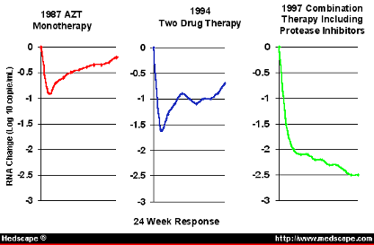
4.2 Evolutionary Ecology
Seeks to explain adaptation at equilibrium, examining the traits that contribute to reproductive success.
Genetics is largely simplified or ignored. Instead, approaches like optimization and game theory are important.
4.2.1 Example — Evolution of Virulence
Should you be more virulent or less virulent?
Whether or not the pathogen depends on the host matters, since if the pathogen can live in the environment.
Asymptomatic transmission matters.
If by being more virulent you are more likely to transmit, that may be selective, even though it may mean less contacts.
It depends on the relationship between virulence and transmission.
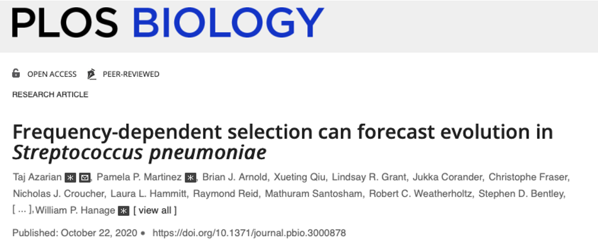 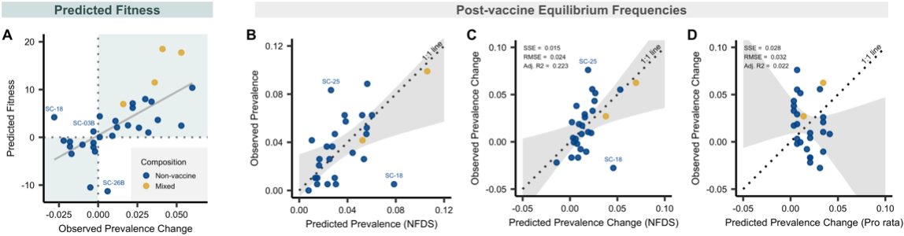
4.3 Phylogenetics
Florida Dentist with HIV
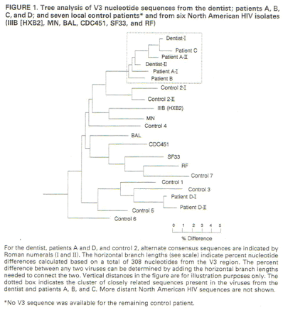
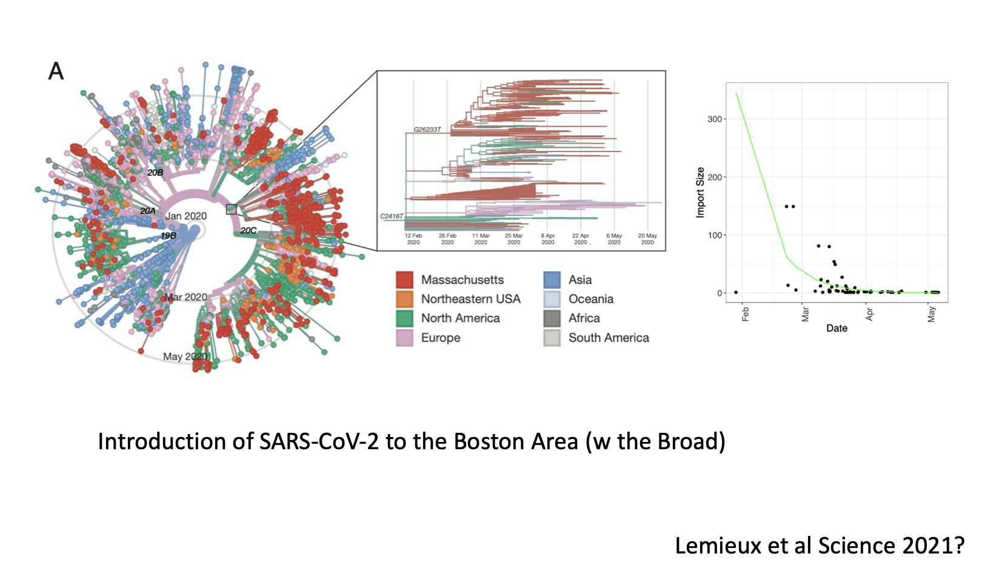
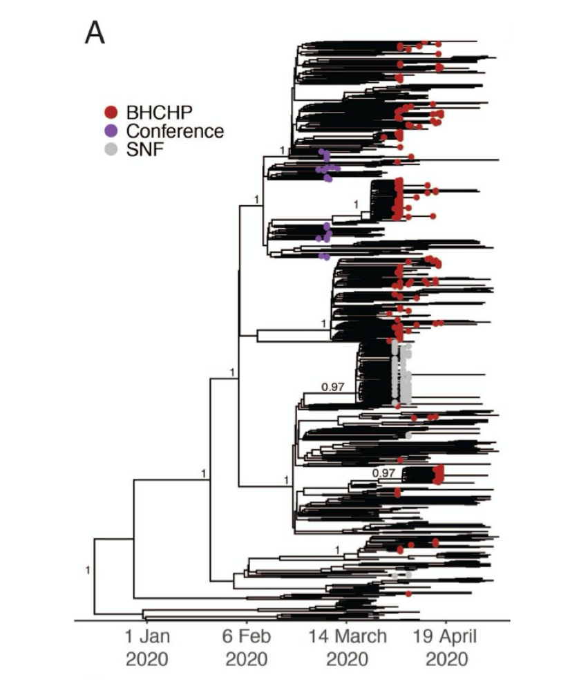
4.4 Paleontology
Suggestion that there may have been pneumonic plague that popped up multiple times in the Neolithic.
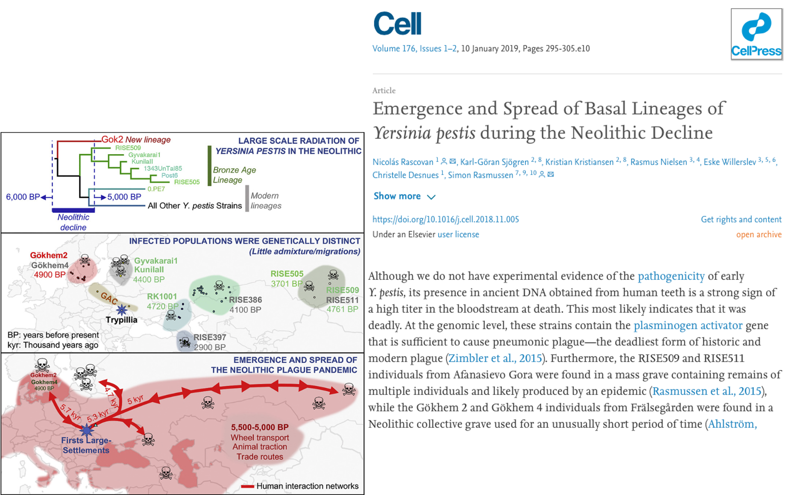
5 Comparing Medicine to Evolutionary Epidemiology
We can’t experiment, but we can do case-follow-up.
We can also do genetic association tests.
- Field Studies
- Comparative methods
- Tree reconstruction
6 What is Fitness
“However many ways there are of being alive, there are infinitely more ways to be dead” —Bill
Relative reproductive success:
The change in the frequency of a gene from one generation to the next. Something that tends to reproduce early experiences an advantage (shorter generation time — think Alpha and Delta strains).
- r species vs. K species, species that live with high reproductive rates vs. those that live close to carrying capacity.
“There’s a party in the lung, and everybody wants to get in” —a now successful lead WHO official
Said of pneumococcus;
It could be that they get into the lungs accidentally as a result of colonizing the nose.
Getting into the lung is not what they want to do, because it’s a bit of a dead end.
Saying blood is a niche for these pathogens is a bit like saying the ocean is a niche for humans; some will survive for some time.
The nasopharynx is where “pneumos” are evolved to survive and thrive.
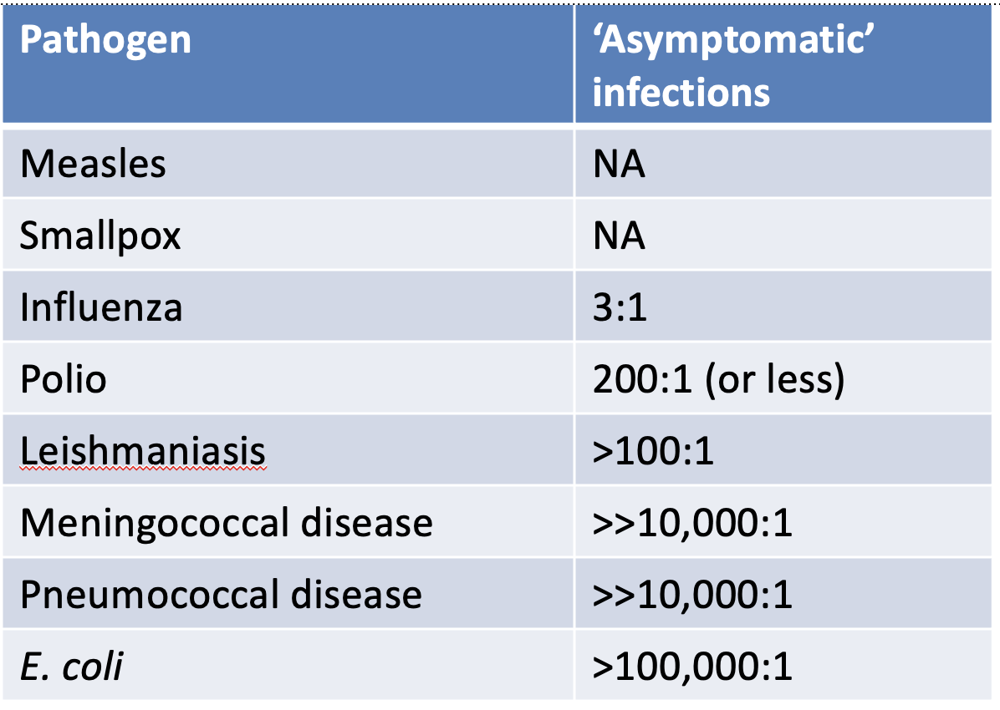
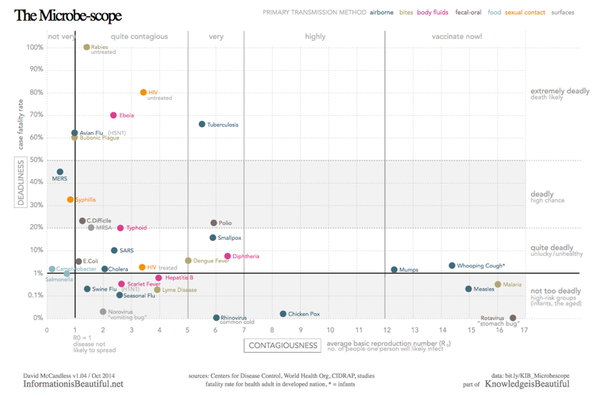
7 Evolution is not Random
In fact, a “genetic algorithm” is much faster than taking random samples.
Limits to adaptation:
- Trade-offs
- Evolutionary history imposes constraints
- Arms races (the ‘Red queen’)
- What was good in your parents’ environment is not good in yours
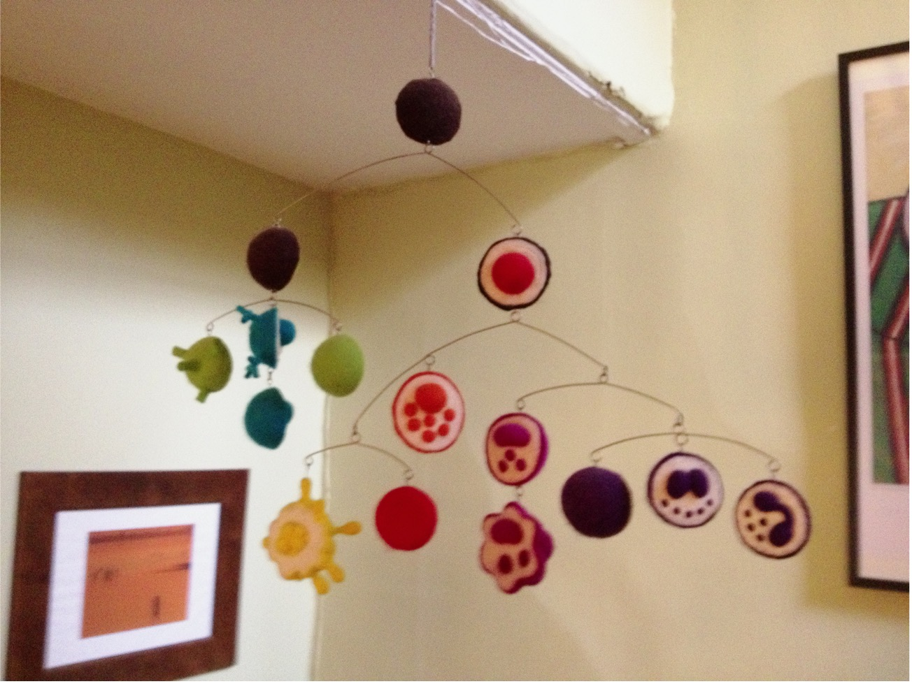
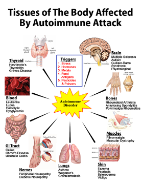
A trade-off with the immune system is that that which protects us can also put us at risk.
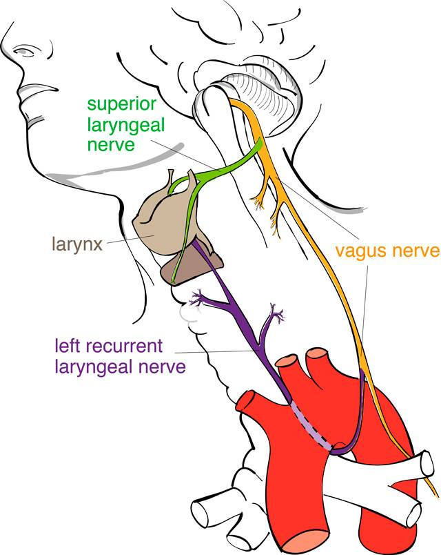
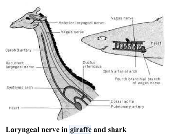
We’re all descended from something like a fish/shark that didn’t have hearts with as many compartments our hearts do.
7.1 Why are there no archaeal pathogens?
So many students wrote that “things want to be in tune with us,” but that’s just not true. If transmission or virulence confers a replicative advantage, then it’s evolutionarily advantageous!
Evolutionary interests of horizontally transmitted pathogens do not coincide with their hosts.
Result: host resistance and parasite virulence.
Selection does not always produce ideal adaptations, because it works on things that interact.
7.2 How have we changed the environment?
Human actions are continually changing the environment experienced by pathogens.
Drugs and vaccines can be considered as ecological or evolutionary experiments.
Children used to encounter polio very, very young. Some would die. One thing we know, the older people are when they encounter a disease for the first time, the more serious it’s likely to be.
“It has been estimated that vaccination with 7 of the 12 routinely recommended childhood vaccines prevents an estimated 33 000 deaths and 14 million cases of disease in every birth cohort, saves $10 billion in direct costs in each birth cohort, and saves society an additional $33 billion in costs that include disability and lost productivity.” —Zhou et al (2001) Arch Ped Adolesc Med
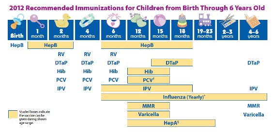
https://www.ncbi.nlm.nih.gov/pmc/articles/PMC5349095/ Increased incidence of adult pneumococcal pneumonia during school holiday periods
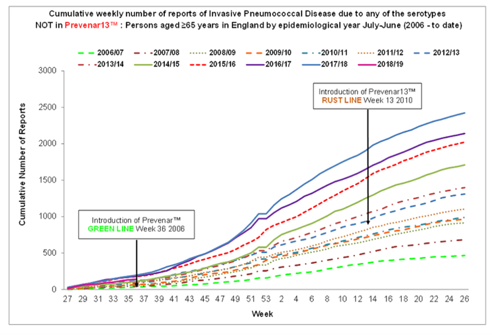